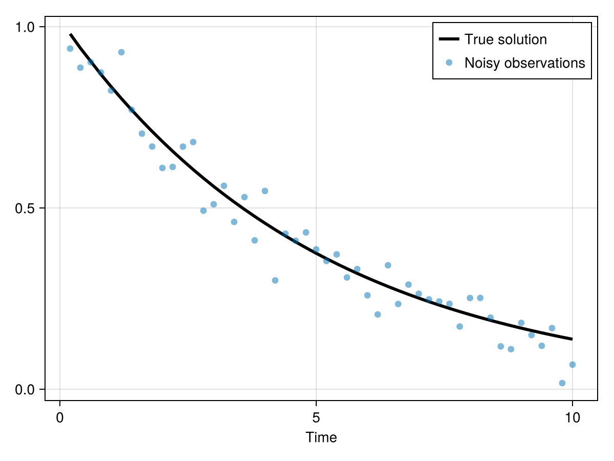
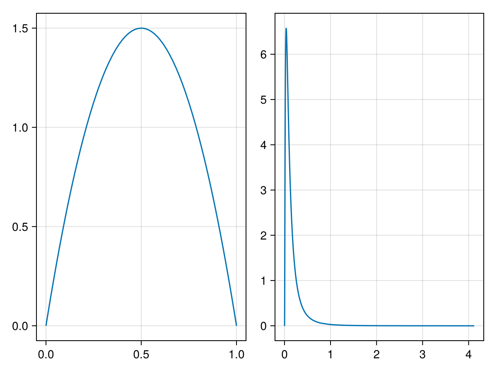
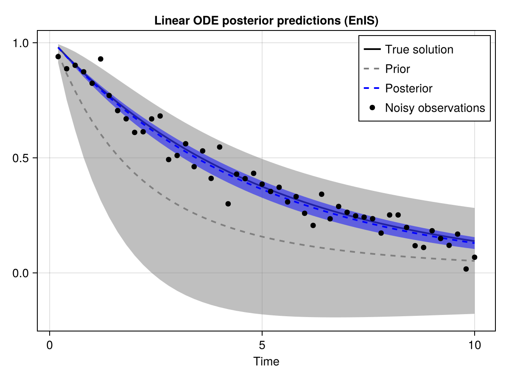
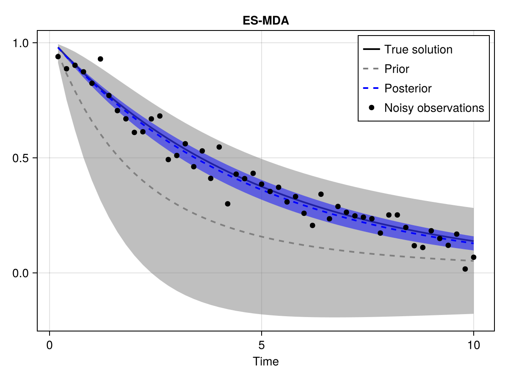
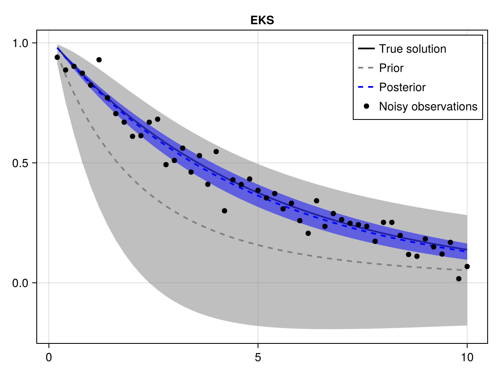
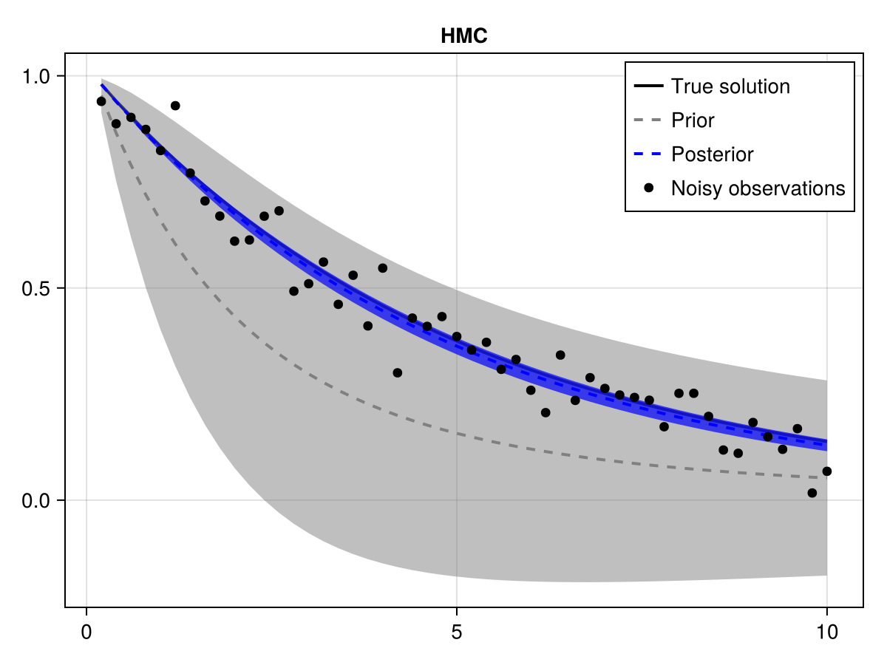
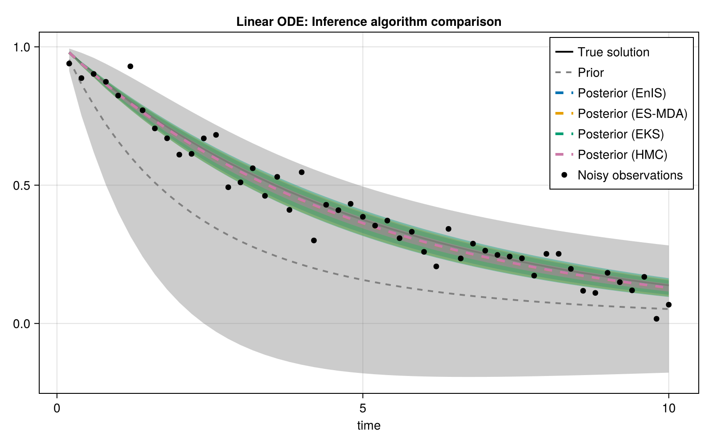

Getting started: Linear ODE inversion
In this example, we will use SimulationBasedInference in combination with the OrdinaryDiffEq package to recover the true parameter of a simple linear ordinary differential equation:
\[\frac{\partial u}{\partial t} = -\alpha u\]
Of course, this ODE has an analytical solution: $u(t) = u_0 e^{-\alpha t}$ which we could (more efficiently) use to define the inverse problem. However, in order to demonstrate the usage of SimulationBasedInference on dynamical systems more broadly, we will solve the problem using numerical methods.
First, we load the necessary packages
using SimulationBasedInference
using OrdinaryDiffEqTsit5
using CairoMakie
using RandomLoading DynamicHMC will load the corresponding extension module in SimulationBasedInference:
using DynamicHMC
We also need to initialize a random number generator for reproducibility.
const rng = MersenneTwister(1234);Now, we will define our simple dynamical system using the general SciML problem interface:
ode_func(u,p,t) = -p[1]*u;
α_true = 0.2
ode_p = [α_true];
tspan = (0.0,10.0);
odeprob = ODEProblem(ode_func, [1.0], tspan, ode_p)ODEProblem with uType Vector{Float64} and tType Float64. In-place: false
Non-trivial mass matrix: false
timespan: (0.0, 10.0)
u0: 1-element Vector{Float64}:
1.0To solve an inverse (or inference) problem with SimulationBasedInference, we must first define a forward problem. The forward problem consists of two components:
- A SciML problem type or forward map function $f: \Theta \mapsto \mathcal{U}$.
- One or more "observables" which define the observation operator that transforms the model state to
to something comparable to data.
In this case, we can simply define a function that extracts the current state from the ODE integrator. The TimeSampled output type additionally takes an initial time point, a vector of observed time points, and a tuple specifying the shape or coordiantes of the observable at each time point. Here, (1,) indicates that the state is a one-dimensional vector.
dt = 0.2
tsave = tspan[begin]+dt:dt:tspan[end];
n_obs = length(tsave);
observable = SimulatorObservable(
integrator -> integrator.u,
size(odeprob.u0),
name =:y,
output = TimeSampled(first(odeprob.tspan), tsave, samplerate=0.01)
);
forward_prob = SimulatorForwardProblem(odeprob, observable)SimulatorForwardProblem for ODEProblem with 1 observables (:y,)
In order to set up our synthetic example, we need some data to condition on. For this example, we will generate the data by running the forward model and adding Gaussian noise.
ode_solver = Tsit5()
forward_sol = solve(forward_prob, ode_solver);
true_obs = get_observable(forward_sol, :y)
noise_scale = 0.05
noisy_obs = true_obs .+ noise_scale*randn(rng, n_obs);Plot the resulting pseudo-observations vs. the ground truth.
let fig = Makie.Figure()
ax = Makie.Axis(fig[1,1], xlabel="Time")
Makie.lines!(ax, tsave, true_obs.data, label="True solution", linewidth=3, color=:black)
Makie.scatter!(ax, tsave, noisy_obs.data, label="Noisy observations", alpha=0.5)
Makie.axislegend(ax)
end
Here we set our priors. We use a weakly informative Beta(2,2) prior which places less probability mass at the extreme values near zero and one. We could also use a flat prior Beta(1,1) if we wanted to be maximally indifferent to which parameters are most likely.
model_prior = prior(α=Beta(2,2));For the noise scale, we use a LogNormal prior with median σ = 0.1. This is intentionally different (in this case) higher than the true noise scale added to the data. For the ensemble-based methods, this parameter is important because it is treated as a constant.
noise_scale_prior = prior(σ=LogNormal(log(0.1), 1));We can plot the priors for both parameters for closer visual inspection:
let fig = Makie.Figure()
ax1 = Makie.Axis(fig[1,1])
ax2 = Makie.Axis(fig[1,2])
Makie.plot!(ax1, model_prior.dist.α)
Makie.plot!(ax2, noise_scale_prior.dist.σ)
end
Now we assign a simple Gaussian likelihood for the observation/noise model.
lik = IsotropicGaussianLikelihood(observable, noisy_obs, noise_scale_prior);We now have all of the ingredients needed to set up and solve the inference problem. We will start with a simple ensemble importance sampling inference algorithm.
inference_prob = SimulatorInferenceProblem(forward_prob, ode_solver, model_prior, lik);
enis_sol = solve(inference_prob, EnIS(), ensemble_size=128, rng=rng);We can extract the prior ensemble from the solution.
prior_ens = get_transformed_ensemble(enis_sol)
prior_ens_mean = mean(prior_ens, dims=2)[:,1]
prior_ens_std = std(prior_ens, dims=2)[:,1]
prior_ens_obs = Array(get_observables(enis_sol).y);
prior_ens_obs_mean = mean(prior_ens_obs, dims=2)[:,1]
prior_ens_obs_std = std(prior_ens_obs, dims=2)In contrast to other inference algorithms, importance sampling produces weights rather than direct samples from the posterior. We can use the get_weights method to extract these from the solution.
importance_weights = get_weights(enis_sol);We can then use these importance weights to compute weighted statistics using standard methods from the Statistics and StatsBase modules. Note that these modules are exported by SimulationBasedInference for convenience.
posterior_obs_mean_enis = mean(prior_ens_obs, weights(importance_weights), 2)[:,1]
posterior_obs_std_enis = std(prior_ens_obs, weights(importance_weights), 2)[:,1]
posterior_mean_enis = mean(prior_ens, weights(importance_weights))0.20693201660435379Now we plot the prior vs. the posterior predictions.
let fig = Makie.Figure()
ax = Makie.Axis(fig[1,1], title="Linear ODE posterior predictions (EnIS)", xlabel="Time")
Makie.lines!(ax, tsave, true_obs.data, label="True solution", color=:black, linewidth=2)
Makie.lines!(ax, tsave, prior_ens_obs_mean, label="Prior", color=:gray, linestyle=:dash, linewidth=2)
Makie.band!(ax, tsave, prior_ens_obs_mean .- vec(2*prior_ens_obs_std), prior_ens_obs_mean .+ vec(2*prior_ens_obs_std), color=(:gray, 0.5))
Makie.lines!(ax, tsave, posterior_obs_mean_enis, label="Posterior", color=:blue, linestyle=:dash, linewidth=2)
Makie.band!(ax, tsave, posterior_obs_mean_enis .- 2*posterior_obs_std_enis, posterior_obs_mean_enis .+ 2*posterior_obs_std_enis, color=(:blue, 0.5))
Makie.scatter!(ax, tsave, noisy_obs.data, label="Noisy observations", color=:black)
Makie.axislegend(ax)
end
One of the key benefits of the standardized problem type interface is that we can very easily switch to a different algorithm by changing a single line of code. Here, we solve the same inference problem instead with the ensemble smoother w/ "multiple data assimilation" (ES-MDA).
esmda_sol = @time solve(inference_prob, ESMDA(), ensemble_size=128, rng=rng); 12.501374 seconds (112.47 M allocations: 8.628 GiB, 14.42% gc time, 70.69% compilation time)
Now we extract the posterior ensemble and compute the relevant statistics.
posterior_esmda = get_transformed_ensemble(esmda_sol)
posterior_mean_esmda = mean(posterior_esmda, dims=2)1×1 Matrix{Float64}:
0.20812793593660125Plotting the predictions shows that we get a much tighter estimate of the posterior mean.
posterior_obs_esmda = get_observables(esmda_sol).y.data
posterior_obs_mean_esmda = mean(posterior_obs_esmda, dims=2)[:,1]
posterior_obs_std_esmda = std(posterior_obs_esmda, dims=2)[:,1]
let fig = Makie.Figure()
ax = Makie.Axis(fig[1,1], title="ES-MDA", xlabel="Time")
Makie.lines!(ax, tsave, true_obs.data, label="True solution", color=:black, linewidth=2)
Makie.lines!(ax, tsave, prior_ens_obs_mean, label="Prior", color=:gray, linestyle=:dash, linewidth=2)
Makie.band!(ax, tsave, prior_ens_obs_mean .- vec(2*prior_ens_obs_std), prior_ens_obs_mean .+ vec(2*prior_ens_obs_std), color=(:gray, 0.5))
Makie.lines!(ax, tsave, posterior_obs_mean_esmda, label="Posterior", color=:blue, linestyle=:dash, linewidth=2)
Makie.band!(ax, tsave, posterior_obs_mean_esmda .- 2*posterior_obs_std_esmda, posterior_obs_mean_esmda .+ 2*posterior_obs_std_esmda, color=(:blue, 0.5))
Makie.scatter!(ax, tsave, noisy_obs.data, label="Noisy observations", color=:black)
Makie.axislegend(ax)
end
We can again solve the same problem with the Ensemble Kalman Sampler of Garbuno-Inigo et al. (2020) which yields very similar results (in this case).
eks_sol = @time solve(inference_prob, EKS(), ensemble_size=128, rng=rng, verbose=false)
posterior_eks = get_transformed_ensemble(eks_sol)
posterior_mean_eks = mean(posterior_eks, dims=2)
posterior_obs_eks = get_observables(eks_sol).y.data
posterior_obs_mean_eks = mean(posterior_obs_eks, dims=2)[:,1]
posterior_obs_std_eks = std(posterior_obs_eks, dims=2)[:,1]
let fig = Makie.Figure()
ax = Makie.Axis(fig[1,1], title="EKS")
Makie.lines!(ax, tsave, true_obs.data, label="True solution", color=:black, linewidth=2)
Makie.lines!(ax, tsave, prior_ens_obs_mean, label="Prior", color=:gray, linestyle=:dash, linewidth=2)
Makie.band!(ax, tsave, prior_ens_obs_mean .- vec(2*prior_ens_obs_std), prior_ens_obs_mean .+ vec(2*prior_ens_obs_std), color=(:gray, 0.5))
Makie.lines!(ax, tsave, posterior_obs_mean_eks, label="Posterior", color=:blue, linestyle=:dash, linewidth=2)
Makie.band!(ax, tsave, posterior_obs_mean_eks .- 2*posterior_obs_std_eks, posterior_obs_mean_eks .+ 2*posterior_obs_std_eks, color=(:blue, 0.5))
Makie.scatter!(ax, tsave, noisy_obs.data, label="Noisy observations", color=:black)
Makie.axislegend(ax)
end
Now solve using the gold standard No U-turn sampler (NUTS). This will take a few minutes to run. Note that this would generally not be feasible for more expensive simulators.
hmc_sol = @time solve(inference_prob, MCMC(NUTS()), num_samples=1000, rng=rng);
posterior_hmc = transpose(Array(hmc_sol.result))
posterior_mean_hmc = mean(posterior_hmc, dims=2)
posterior_obs_hmc = reduce(hcat, map(out -> out.y, hmc_sol.storage.outputs))
posterior_obs_mean_hmc = mean(posterior_obs_hmc, dims=2)[:,1]
posterior_obs_std_hmc = std(posterior_obs_hmc, dims=2)[:,1]
let fig = Makie.Figure()
ax = Makie.Axis(fig[1,1], title="HMC")
Makie.lines!(ax, tsave, true_obs.data, label="True solution", color=:black, linewidth=2)
Makie.lines!(ax, tsave, prior_ens_obs_mean, label="Prior", color=:gray, linestyle=:dash, linewidth=2)
Makie.band!(ax, tsave, prior_ens_obs_mean .- vec(2*prior_ens_obs_std), prior_ens_obs_mean .+ vec(2*prior_ens_obs_std), color=(:gray, 0.5))
Makie.lines!(ax, tsave, posterior_obs_mean_hmc, label="Posterior", color=:blue, linestyle=:dash, linewidth=2)
Makie.band!(ax, tsave, posterior_obs_mean_hmc .- 2*posterior_obs_std_hmc, posterior_obs_mean_hmc .+ 2*posterior_obs_std_hmc, color=(:blue, 0.7))
Makie.scatter!(ax, tsave, noisy_obs.data, label="Noisy observations", color=:black)
Makie.axislegend(ax)
end
Finally, we can plot the posterior predictions of all of the algorithms and compare.
let fig = Makie.Figure(size=(800, 500))
ax = Makie.Axis(fig[1,1], title="Linear ODE: Inference algorithm comparison", xlabel="time")
Makie.lines!(ax, tsave, true_obs.data, label="True solution", color=:black, linewidth=2)
Makie.lines!(ax, tsave, prior_ens_obs_mean, label="Prior", color=:gray, linestyle=:dash, linewidth=2)
Makie.band!(ax, tsave, prior_ens_obs_mean .- vec(2*prior_ens_obs_std), prior_ens_obs_mean .+ vec(2*prior_ens_obs_std), color=(:gray, 0.4))
for (mean_obs, std_obs, label, color) in [
(posterior_obs_mean_enis, posterior_obs_std_enis, "Posterior (EnIS)", Makie.wong_colors()[1]),
(posterior_obs_mean_esmda, posterior_obs_std_esmda, "Posterior (ES-MDA)", Makie.wong_colors()[2]),
(posterior_obs_mean_eks, posterior_obs_std_eks, "Posterior (EKS)", Makie.wong_colors()[3]),
(posterior_obs_mean_hmc, posterior_obs_std_hmc, "Posterior (HMC)", Makie.wong_colors()[4]),
]
Makie.lines!(ax, tsave, mean_obs, label=label, linestyle=:dash, linewidth=3, color=color)
Makie.band!(ax, tsave, mean_obs .- 2*std_obs, mean_obs .+ 2*std_obs, color=(color, 0.4))
end
Makie.scatter!(ax, tsave, noisy_obs.data, label="Noisy observations", color=:black)
Makie.axislegend(ax)
end
Since this such a simple problem with well-specified noise characteristics, all four methods generally agree in the mean. Notice, however, that only HMC is able to correctly estimate the noise scale. This reflects an important trade-off of the ensemble Kalman methods.
This page was generated using Literate.jl.